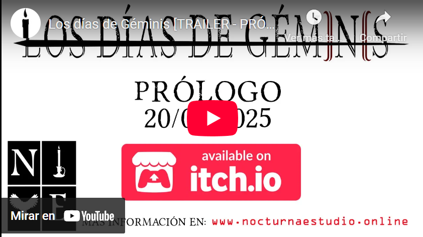
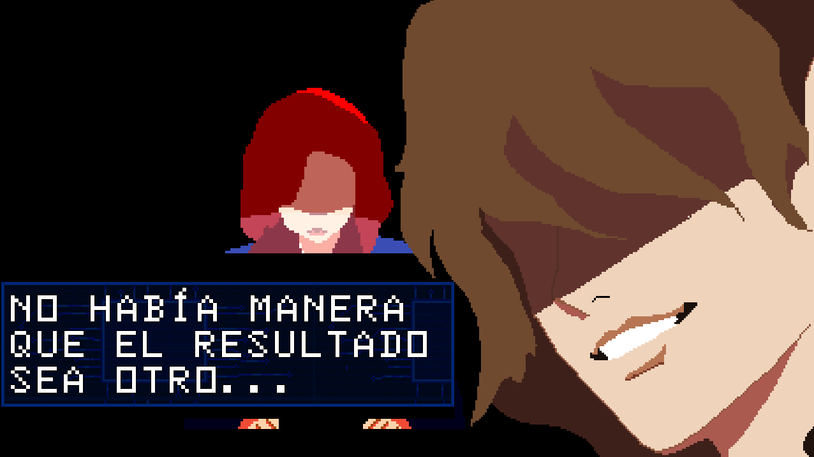
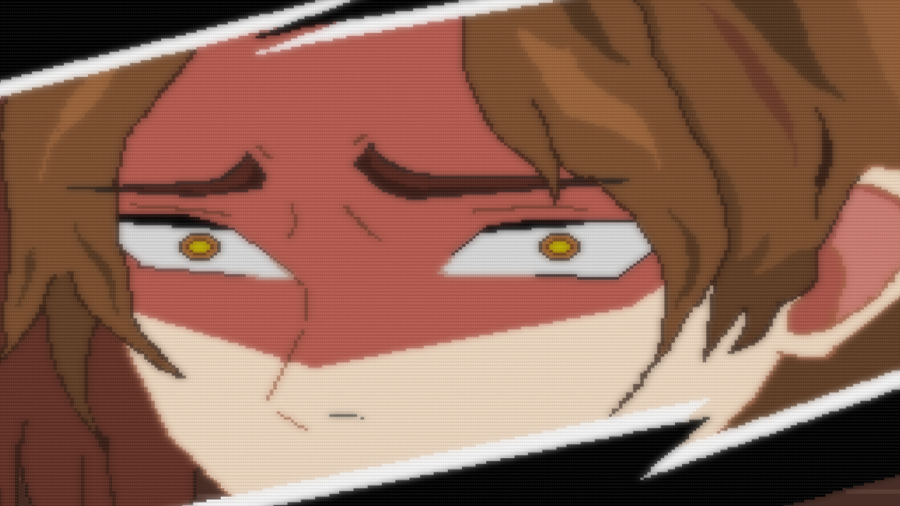
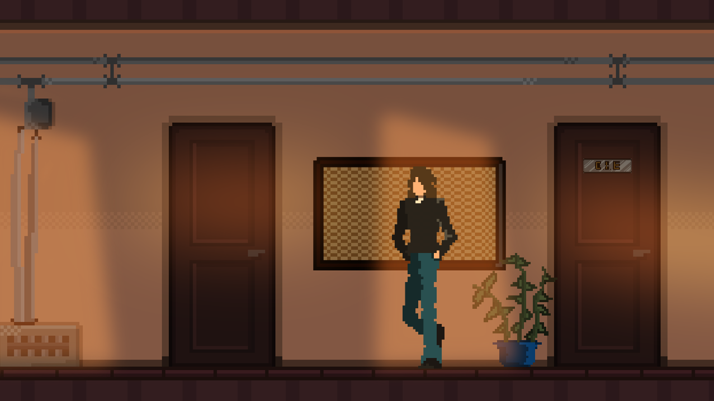
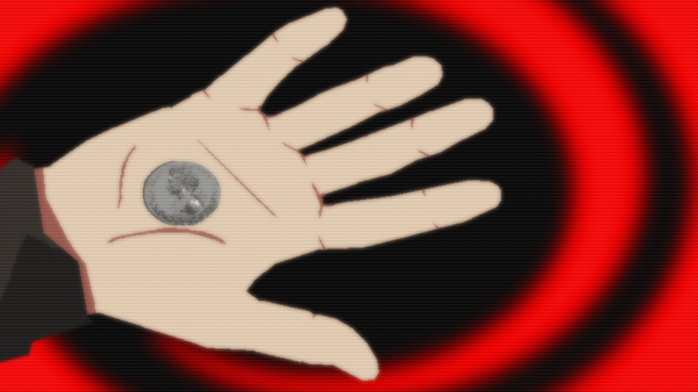
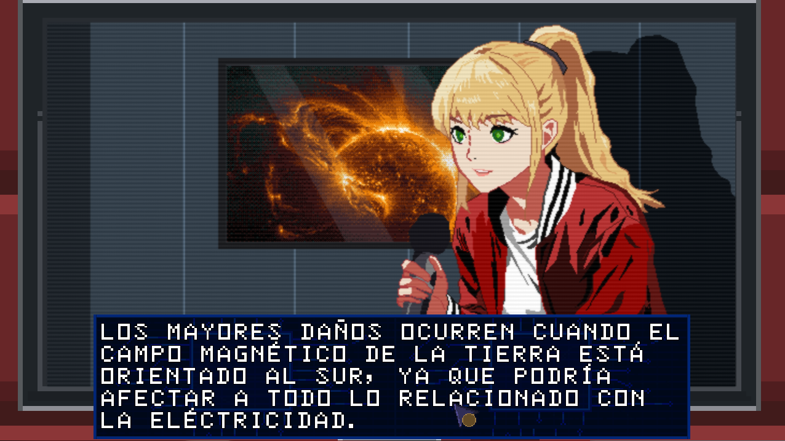
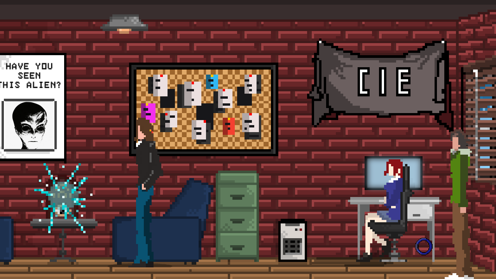

- Aventura gráfica, Point & Click
- Misterio, Ciencia ficción, Aventura
- Disponible en Español e Inglés
- Windows
"Un día, radiotelescopios de todo el mundo captaron señales de origen desconocido y propiedades enigmáticas..."







📥 DESCARGA EN 📥